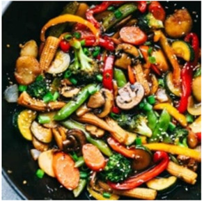

Vegan Stir Fry

Description
Stir-frying is a fast way to cook small pieces of food in a hot skillet or wok. In addition to being quick and
easy, stir-frying is also healthy.
It results in tender-crisp vegetables that retain more nutrients than if they were boiled.
And since stir-frying requires only a small amount of oil, the fat content is low.
Ingredients
- 1 tablespoon olive oil
- 1 red bell pepper, sliced
- 1 yellow bell pepper, sliced
- 1 cup sugar snap peas
- 1 cup carrots, sliced
- 1 cup mushrooms, sliced
- 2 cups brocolli
- 1 cup baby corn
- 1/2 cup water chestnuts
- 1/4 cup soy sauce
- 3 garlic cloves, minced
- 3 tablespoons brown sugar
- 1 teaspoon sesame oil
- 1/2 cup miso soup broth
- 1 tablespoon cornstarch
- chopped green onions and sesae seeds for garnish (optional)
Instructions
- Add 1 tablespoon olive oil over medium-high heat in a wok or large skillet. Add bell pepper, peas, carrots,
mushrooms, broccoli, baby corn, and water chestnuts. Sauté 2-3 minutes until veggies are almost tender.
- In a small bowl, whisk together soy sauce, garlic, brown sugar, sesame oil, miso broth, and cornstarch.
- Pour over veggies and cook until the sauce has thickened. Garnish with chopped green onions and sesame seeds if
desired.